About the tool
Complex event processing (CEP) systems discover in the incoming event stream occurrences of patterns of events (called complex events) which indicate threats, opportunities, or necessity of some action. Sufficiently complex patterns may become hard to understand, and even simple patterns may contain subtle errors with respect to their intended meaning.
PatternExplorer tool helps to find errors in patterns. The tool compiles patterns (regular language-like) into a non-deterministic automata with variables. Compiled patterns can be matched with streams of events. More importantly, using extended narrowing the tool can generate effectively symbolic event sequences satisfying a pattern. Generated sequences can then be matched with another pattern to check if there are any unintended matching complex events. Of particular note is our efficient representation of skipped events in generated symbolic streams which avoids creation of spurious instances and reduces the search space. A user-friendly web interface provides access to most important functionalities.
Installation
Requirements
The code was tested only with SWI Prolog (it may not work with other Prolog environments as it uses some non-standard libraries. Also module systems differ between Prolog interpreters). Functor call_time/2 from
statistics
module which we use in tests was introduced relatively recently so a year-old installation of SWI Prolog may not have it.
Execution of the code should not depend on the operating system (it was tested on MacOS X and Windows 10) as it does not use any operating system specific libraries.
Recompilation of documentation requires AsciiDoc.
Installation
Clone the github repository:
git clone https://github.com/BartoszPZielinski/PatternExplorerSyntax of the pattern language
The pattern language uses the following constructs:
-
start(X)bindXto a last matched event (or special sentinel eventstart(0)ifstart(X)occurs at the beginning of a pattern). -
event(T,X)matches an event of typeTand binds it toX. -
any(X)recognizes event of any type and binds it to a variableX. -
iter(P)matches repetitions ofP. -
iter(P, f(h₁(E₁),…,hₐ(Eₐ)), X)matches repetitions ofP, and bindsXto an eventf(v₁,…,vₐ)wherev₁is the result of aggregating withhᵢthe values of expressionEᵢ. It is assumed that event schema contains the definition of an event type of the formf(a₁,…,aₐ)so that we can later refer tovᵢasref(X, aᵢ). -
P₁ or P₂matches events matched either byP₁orP₂. -
P₁ then P₂matchesP₁followed byP₁. -
filter(P, C)matchesPif it satisfies conditionC. -
noskip(P, event(T, X), C)matches stringSmatched byPif inSthere does not occur an event of typeTnot explicitly matched inPwhich satisfies conditionC.
Currently we implement standard aggregate functions sum(E), min(E), max(E), avg(E), count(*).
|
The only numerical values allowed are integers and all conditions must use predicates from library(clpfd).
|
| Variables in patterns are actual Prolog variables and must start with a capital lettter. |
Unfortunately, SWI Prolog seeing dot assumes its left operand must be a dict. Thus, instead of using a natural notation of the form X.a to refer to the attribute a of event bound to the variable X we use a much more cumbersome notation ref(X, a). Thus, e.g., condition
X.a > 0 is expressed in the actual pattern language as
ref(X, a) #> 0 (note the use of clpfd comparison operator \#>).
|
A pattern is passed to the compiler always as a full pattern, i.e., as a term of the form select(Input, Output, Pattern), where Pattern is a pattern (constructed with functors as above) and Input and Output are terms of the form in(X₁,…,Xₑ) and out(Y₁,…,Yₐ), respectively, where
-
X₁,…,Xₑare distinct variables which must include all free variables ofPattern, -
Y₁,…,Yₐare distinct variables which must contain only variables bound by Pattern.
Binding structure of patterns
It remains to describe the binding structure of patterns. First we describe (by recursion on the structure of the pattern) the set of variables bound by a pattern:
-
start(X)bindsX(to the last matched event) -
event(T, X)bindsX(to the matched event of typeT) -
any(X)bindsX(to the matched event of any type) -
iter(P)binds nothing. -
iter(P, f(h₁(E₁),…,hₐ(Eₐ)), X)binds onlyX -
P₁ or P₂binds variables bound by bothP₁andP₂. Since only one of the two alternatives is actually matched there is no possibility of conflict -
P₁ then P₂binds variables bound by eitherP₁orP₂. Bindings fromP₂shadow bindings fromP₁ -
filter(P, C)andnoskip(P, Event(T,X), C)bind variables bound byP(in particularXis not visible outside).
Let us now describe shadowing and (internal) scope of variable bindings. Variables are read in conditions and in aggregation expressions. We have
-
event(T,X)cannot contain conditions or aggregation expressions so there is nothing to describe here. -
For
iter(P)scope of variables is the same as inP -
Consider now
iter(P, f(h₁(E₁),…,hₐ(Eₐ)), X).Xis not visible inPor expressionsEᵢ. ExpressionsEᵢare in the scope of variables bound byPwhich take precedence (shadow) external binding of identically named variables. -
In case of
P₁ or P₂neither bindings provided byP₁are visible inP₂nor bindings provided byP₂are visible inP₁. -
In case of
P₁ then P₂bindings provided byP₂are not visible inP₁. However, bindings provided byP₁are visible inP₂. In case of conflict insideP₂variables bound insideP₂shadow those bound byP₁. -
In case of
filter(P, C)conditionCis in the scope of variables bound byPand bindings provided byPtake precedence (shadow) external ones. -
In case of
noskip(P, Event(T,X), C)conditionCis in the scope ofXbut not of variables bound byP.
The compilation function requires that there is no shadowing of variables. Naively, it would seem to be sufficient to forbid binding the same variable in two distinct places in the same pattern. However, since the alternative (P₁ or P₂) binds variables bound in both subpatterns we have to permit repetition of bindings in alternative subpatterns if they are not shadowed. A pattern which contains only minimal repetition of bindings (in the alternative subpatterns) is said to satisfy the unique variable property
A pattern can be converted to the no-shadowed form using predicate
make_pattern_unique/2from module skip_pattern_syntax. This predicate is actually used by the web tool when compiling patterns provided in the input file.
Using PatternExplorer
Input file syntax
The input file consists of a sequence of Prolog terms (each ending with a dot). One can use Prolog comments inside the input file.
The first term contains optional descriptions of attribute domains.
It is recommended to limit the domain of time attribute (as well as any other
attribute participating in any condition more complex than simple equality)
to a finite one. This is because contradictory clpfd constraints may not be
recognized as such if their variables are not constrained to a finite domain.
The term defining attribute domains is as follows:
def_attr_domains([
attr_dom(attr1, x0..x1),
attr_dom(attr2, y0..y2),
...
]).where attr1, attr2, … are attribute names and x0, x1, y0, y1, … are
integers or symbols inf or sup. Thus e.g.,
def_attr_domains([
attr_dom(time, 0..300),
attr_dom(delta_schedule, 0..200)
]).declares that the value of attribute time will be between 0 and 300 and
the value of attribute delta_schedule will be between 0 and 200.
The second term defines event schema (it is important that all events appearing in the event stream, i.e., all events except for aggregation events, have the attribute time). The form of this term is as follows:
def_event_types([
event_type_specification_1,
event_type_specification_2,
event_type_specification_3,
...
]).E.g., example input file contains the following declaration:
def_event_types([
stop_enter(id, stop_id, delta_schedule, time),
stop_leave(id, stop_id, delta_schedule, time),
abrupt_accel(id, time),
abrupt_decel(id, time),
sharp_turn(id, dir, time),
driver_in(id, drv_id, time),
driver_out(id, drv_id, time),
velocity(id, max, min, avg, start_time, time),
location(id, location_id, time),
agg(cnt)
]).Observe that this is a proper Prolog term so names of event types and names of attributes must not start with upper-case letters unless they are put inside single quotes.
Next, there should appear pattern declarations. Each pattern declaration has the form
pattern(PatternId, select(
inp(V1, V2, ...),
out(W1, W2, ...),
Pattern
)).Here
-
PatternIdis a pattern identifier (it can be a number or an atom, or any other ground term), -
V1,V2, … are input variables (they must all be distinct, and to be useful they should occur in conditions in patternPattern, they must not, however, be bound byPattern), -
W1,W2, … are output variables (they must all be distinct, and they must all occur in the patternPattern), -
Patternis the actual pattern.
Input and output variables, as well as all the other variables occurring in Pattern must be actual Prolog variables. This means that they must start with a capital letter.
|
For example, the file example_data.pl contains the following pattern declaration:
pattern(11, select(inp(Se, K), out,
filter(
event(driver_in, D),
ref(D, id) #= ref(Se, id) #/\
ref(D, time) #> ref(Se, time) #/\
ref(D, time) #< ref(K, time)
)
)).Finally, input file can contain test declarations called “examples”`. There are four kinds of example declarations:
-
Declaration of a simple test for parameterless pattern (with no input variables) of the form
example(ExId, ex(PatternId)).where
ExIdis a test identifier andPatternIdis a pattern identifier. -
Declaration of a parametrized test of the form
example(ExId, ex(PatternId, inp(e1, e2, ...))where
ExIdandPatternIdare like above ande1,e2, … are input events. -
Declaration of a test of a pattern with identifier
Pid1with another patternPid2, where instances ofPid1are matched withPid2:example(ExId, ex(Pid1, out(V1, V2, ...)-inp(W1, W2, ...), Pid2)).Here
ExIdis a test identifier, and expressionout(V1, V2, ...)-inp(W1, W2, ...)links output of
Pid1with input ofPid2. -
Declaration of a test of a pattern with identifier
Pid1with another patternPid2, where instances ofPid1are matched withPid2, but in addition patternPid1is not closed and has some input events:example(ExId, ex(Pid1, inp(U1, U2, ...)-out(V1, V2, ...)-inp(W1, W2, ...), Pid2)).Here
ExIdis a test identifier, and expressioninp(U1, U2, ...)-out(V1, V2, ...)-inp(W1, W2, ...)links output of
Pid1with input ofPid2, and in addition it also sets the input eventsU1, U2, …ofPid1.
For instance, file example_data.pl contains the following declarations
(among others):
example(1, ex(10, out(X, T)-inp(X, T), 11)).
example(2, ex(0)).
example(21, ex(12, inp(driver_in(10, _, _)))).Web tool CLI
In order to run the web interface
-
Go to the command line and change the directory to the directory with tool source.
-
Create the input file with description of event types and patterns. To test the app one can use the example input file
example_data.plfrom the tool source directory. -
Run the interpreter on the server.pl file:
swipl ./server.pl -
From the Prolog interpreter run the following command (adjust if necessary):
server( 3000, (1) 'example_data.pl' (2) ).1 port number the web interface will use, 2 the path to the input file. The command above will read the input file, compile the patterns and start the web interface.
-
In the browser navigate to appropriate address, e.g., http://localhost:3000
Api and source files guide
Documentation sources are contained in docs subfolder.
App sources and tests are contained in PatternExplorer subfolder.
Main application
Dependencies between files

any_event.pl
This module defines functor any_event/1 used in the implementation of
pattern any(X). The call any_event(X) always succeeds, but if X is a variable it ataches to it a constraint any_event which just serves as a marker. Variables thus marked are treated as single (unspecified) events in the narrowed event stream and not subsequences of events.
time_constr.pl
This module defines functor time_constr/2. The call of the form time_constr(X, T) where X is an event variable adds time attribute equal to T to X (and fails if X has already a time attribute distinct from T). This permits us to constrain time on events of unspecified type bound by any(X). If E is an event and not a variable then time_constr(E, T) simply checks if timestamp of E is equal to T.
event_types.pl
The module event_types defines two important functors: def_event_type/1 and def_event_types/1 which accept as a single argument either, respectively, a single declaration of an event type or a list of such declarations. The functors assert associated definitions of ref/3 and event_type/2 functors (also exported by the module). The role of the generated functors is explained below. The module also defines functors event_time/2 (returning timestamp of an event), and update_time/4 which is used by generated automaton and not by the user. Finally, the module also defines the functors def_attr_domains/1 and attr_dom/2 associated with describing domains of attributes of events which will be described below.
Events are represented as Prolog terms of the form
⟨event type⟩(⟨attr_value₁⟩, ⟨attr_value₂⟩, …)
where ⟨event type⟩ plays the role of functor, and arguments are the event’s attributes. Event schema is a list of terms of the form
⟨event_type⟩(⟨attr_name₁⟩, ⟨attr_name₂⟩, …)
with no two terms with the same functor. Declaration such as the one above means that events of type ⟨event_type⟩ have attributes with names ⟨attr_name₁⟩, ⟨attr_name₂⟩, …. Event
⟨event type⟩(⟨attr_value₁⟩, ⟨attr_value₂⟩, …)
has type ⟨event type⟩ and its argument of name ⟨attr_nameᵢ⟩ has value ⟨attr_nameᵢ⟩ for i∈{1, 2, …}.
If X is an event with an attribute a then in our pattern language we refer to the value of this attribute as ref(X, a). During compilation of patterns such terms are replaced by fresh variables (say Y for the sake of example) and additional goals of the form ref(X, a, Y) are added. The goal ref(X, a, Y) is satisfied when the attribute a of an event X has value Y.
To check the type of an event one can use predicate event_type/2: The goal
event_type(⟨event⟩, ⟨type⟩)
is satisfied when ⟨event⟩ has type ⟨type⟩.
Finally, we describe functor def_attr_domains/1 and attr_dom/2
associated with describing domains of attributes of events. Functor
def_attr_domains/1 accepts as a single argument a list of
attribute domains declarations. Each declaration of domain of an attribute has the
form
attr_dom(attr₁, x₁..x₂)
where attr₁ is an attribute name and x₁ and x₂ are
integers or symbols inf or sup. Thus, the above declares that
attr₁ is between x₁ and x₂.
Execution of def_attr_domains/1 defines dynamic functor attr_dom/2.
The call attr_dom(a, X) applies the domain constraint associated to attribute a
(by def_attr_domains/1) to the value (or variable) X. This functor rarerly needs to be called explicitly, as it is called implicitly when calling ref/3.
skippable.pl
This file contains definition of variable attribute skippable and associated hooks which permits constraint reasoning about types of events an unbound variable cannot be bound to. This module exports a single predicate skippable/3 which works as follows: Let V be a fresh variable and Pairs be a list of pairs of the form ⟨type, condition⟩, where condition constrains V.
-
If
Eventis a variable thenskippable(Event, V, Pairs)adds toEventthe constraintskip(V, Pairs)which declares thatEventis either not of one of the types mentioned inPairs, or it is of one of those types and it satisfies the associated condition. -
if
Eventis not a variable thanskippable(Event, V, Pairs)checks if the the skippability encoded byskip(V, Pairs).
skip_pattern_syntax.pl
Module skip_pattern_syntax exports, aside from binary operators or, and, and then which are used in the patterns, also some predicates which check the properties of patterns related to variables and can convert patterns into satisfying unique variable property. The exported predicates are as follows:
-
pattern_binds/2: Given a patternPa goalpattern_binds(P, V)bindsVto the (ordered) list of all variables bound byP -
closed/2: Given a patternPa goalclosed(P, V)is satisfied iffPis closed andVis the ordered list of variables bound byP(i.e., the same set aspattern_binds/2binds). -
is_unique_pattern/1: The goalis_unique_pattern(P)is satisfied iff a patternPhas a unique variable property, i.e., no variables are shadowed or unnecessarily reused. -
make_pattern_unique/2: Given a patternP0the goalmake_pattern_unique(P0, P)binds a pattern to a variablePwhich is equivalent to P0, but has fresh variables and satisfies the unique variable property.
Note that while predicates pattern_binds/2, closed/2, and is_unique_pattern/1 do not make any assumptions about how the event variables are represented in the pattern passed as an argument (actual Prolog variables or any other terms, it does not matter), but make_pattern_unique/2 requires for correct execution that the pattern passed as a first argument has event variables represented by actual Prolog variables (and the resulting pattern bound to the second argument represents event variables as Prolog variables as well). This is not checked in the goal, so it may lead to difficult to find errors.
so_auto_cp.pl
This module defines a runtime for an automaton recognizing patterns. Automatons (or rather a family of automatons) are defined by the following five dynamic predicates (asserted during compilation of patterns):
itself, a user needs to provide definition for the following five predicates ( the first argument of the first predicate is an identifier which distinguishes between distinct, simultanously defined automatons):
-
initial(Id, Input, I):Iis an initial state for an automaton identified byId(since we assume that from an initial state of one automaton it is impossible to reach state of another automaton, automaton identifier is absent from other automaton defining predicates). Note that initial state is always unique (for a given automaton) except for values of associated state data.Inputis a term of the formin(E₁, …, Eₐ)(the actual functor may depend on the definition of the automaton). Here E₁, …, Eₐ are events to be bound to variables in the initial state I. -
final(F, Output): F is a final state (there may be many final states with distinct functors). Output is a term of the form out(X₁,…,Xₐ) (the actual functor may depend on the definition of the automaton) where X₁,…,Xₐ are variables which get bound to the values of selected event variables associated with the final state F. -
trans(S0, E, Node, S1): automaton can move, after consuming an eventEfrom stateS0to stateS1.Nodeis a special term describing where from in the original pattern this transition comes from. We will describe those terms later. -
eps(S0, S1): automaton can do an ϵ-move fromS1toS2, -
skip(S, E): automaton can skip eventEwhen in stateS.
To run the automaton use match_list/5 which is the sole functor exported by module so_auto_cp. More precisely, the goal
match_list(Id, L0, L, MTrees, Options)is satisfied iff the automaton identified by Id (automatons created by pattern compiler have identifiers identical to identifier of the pattern they were compiled from) recognizes a list L0 which it rewrites into L and
MTrees is a list of lists of positions. Each position in each of the lists in MTrees is either an atom skip or it indicates a position in the pattern from which the automaton was compiled, and where the corresponding element of L was matched. MTrees contains a list of lists of positions instead of a single list of positions because we can chain the matchings (which can also generate solutions using generalized narrowing). The last element of MTrees corresponds to the present matching, the remaining ones are the results of modifications of lists of positions passed in Options, which, presumably, defined positions of matchings in previous passes of match_list/5 which generated L0. Modifications are necessary because L can be longer than L0 (if L0 was not ground) and all lists in MTrees must have equal length with L.
Options is a list of options:
-
input(Input): input events passed to initial state (default in) -
output(Output): output events taken from the output state (default out). Note that here one usually passes a variable which is then bound bymatch_list/5execution. -
max_depth(MaxLen): OnlyMaxLen(default 20) of events will be consumed. This limits the depth of search. -
inmtrees(MTreesIn): a list of lists of positions coming from earlier chained matchings.
To explain positions consider the following pattern:
filter(
event(a, X)
then
iter(
filter(
event(b, Y) (1)
or
event(c, Y)
ref(X, id) #= ref(Y, id)
)
),
ref(X, time) #> 100
)| 1 | Since this c-event is matched inside iteration construct it can be matched multiple times. Associated positions will be of the form pos([p(2), i(0), p(1)]), pos([p(2), i(1), p(1)]), …. Here p(2) corresponds to the fact that the matching is done in the second argument of then, i(0), i(1), etc., counts the iteration (and also corresponds to iteration construct), next p(1) says that the event was matched in the first argument of or, etc. |
Note that pattern constructors which have only single subpatterns (like filter) are not explicitly encoded in the position. Iterations have single subpattern, but they can be matched many times which is indicated by i()-terms. Web interface uses those positions to display the pattern with the part where the matching took place emphasized.
The concept of chaining can be explained with the following example.
Suppose that 1 and 2 are identifiers of compiled patterns and that
pattern 1 has output of the form out(X), and pattern 2 has input in(Y).
Then the following call will generate bound L to symbolic lists of events
matching both pattern 1 and 2 with output event of 1 bound to input event of 2:
:- match_list(1, (1)
_, (2)
L0, (3)
[MTree0], (4)
[output(out(X))] (5)
),
match_list(2, (6)
L0, (7)
L,
MTrees, (8)
[
input(in(X)), (9)
inmtrees([MTree0]) (10)
]
)| 1 | We first match pattern 1, |
| 2 | We start with an unbound variable as a list to be matched, which means that we want to generate solutions |
| 3 | L0 will be bound to a narrowed list matching pattern 1 |
| 4 | MTree0 represents information about where in Pattern 1 events in L0 where matched |
| 5 | We output the output event |
| 6 | Now we match the second pattern |
| 7 | against the list of events narrowed to be solution of the first pattern |
| 8 | this will be bound to [MTrees1, MTrees2], where MTrees1 is updated MTrees0 (with some skip’s inserted) and MTrees2 represents information about where in Pattern 2 events in L where matched |
| 9 | here we bound input of pattern 2 to pattern 1 |
| 10 | and we also pass MTrees0. Note that this is a list since we can chain more than two patterns (even though the web interface does not support that yet) |
compiler_state.pl
The file contains definitions of internal predicates assisting in compilation proces. They are not to be used directly by the user.
compiler_helpers.pl
The file contains definitions of internal predicates assisting in compilation proces. They are not to be used directly by the user.
skip_pattern_compiler.pl
Module skip_pattern_compiler defines predicates which compile patterns into automatons (described earlier). The module exports a single predicate: assert_regular/2: Given an identifier Id (which can be any term) and a pattern P the goal assert_regular(Id, P) asserts (into so_auto_cp module) predicates initial/3, final/2, trans/4, eps/2 and skip/2 (see section so_auto_cp.pl).
pattern.pl
This module defines a number of helper functors which deal with high-level compilation of patterns and execution of examples:
-
pattern/3- a dynamic predicate defined by the call toassert_file/1in module read_patterns.pl which stores information about patterns read from the input file. For each pattern a fact of the formpattern(Id, Pattern, Vars)
is stored where
Idis a pattern identifier,Patternis a pattern as read byread_term/2functor from the input file, andVarsare pairs of equalities VariableName=Var, as defined in thevariable_namesoption ofread_term/2(those store original variable names, which is usefule when printing patterns). -
example/3- a dynamic predicate defined by the call toassert_file/1in module read_patterns.pl which stores information about patterns read from the input file. For each pattern a fact of the formexample(Id, Example, Vars)
is stored where
Idis an example identifier,Exampleis anex-term (see Input file syntax) as read byread_term/2functor from the input file, andVarsare pairs of equalities VariableName=Var, as defined in thevariable_namesoption ofread_term/2(those store original variable names, which is usefule when printing examples). -
get_patterns/1:get_patterns(P)collects all assertedpattern/3facts in one list -
get_examples/1:get_examples(P)collects all assertedexample/3facts in one list -
compile_pattern/1:compile_pattern(Id)compiles pattern with identifierId, -
compile_patterns/0:compile_patternscompiles all patterns -
run/3:run(ExId, MaxLen, L-MTrees)generates a single (use backtracking to generate more) exampleLof list of events matching pattern(s) linked as described in the first argument.MaxLenis the maximal number of matched events andMTreesis a list of lists of positions describing where precisely in a given pattern an event fromLmatched. -
solutions/4andnumbered_solutions/4generate lists of all matchings (predicates are used by the web interface)
patterns_clpfd.pl
This module simply reimports modules skip_pattern_syntax and clpfd.
The only reason for the existence of this module is that
the predicate read_term/2 (used in read_patterns.pl) which parses Prolog terms from the input accepts only a single module parameter, and to parse definitions of patterns Prolog needs to recognize both pattern constructors such as or and then as well as integer constraints such as #> as binary operators.
read_patterns.pl
This module defines predicate assert_file/1. Execution of the goal
assert_file(File) reads input file File and asserts the definitions from this file as dynamic predicates such as pattern/3 and example/3 from
pattern.pl and event type related predicates from event_types.pl.
This predicate, however, does not compile patterns.
style.css
This is a style file for the web interface.
write_pattern.pl
This file contains helper functions which create html to be displayed by the web interface.
server.pl
This file contains definitions of route handlers for the web interface as well as the predicate server(Port, File) which starts the web interface on port Port and reads input file File
Example and tests
Apart from the app code itself, PatternExplorer folder also contains some files related to examples and tests
example_data.pl
This file contains definition of bus traffic control event schema and example patterns and tests. The format is described in section Input file syntax.
aux_types_data.pl
This file contains definitions of spurious event types used in the timing test (see section Evaluation).
timed_test.pl
This file contains prolog program which performs tests which times our tool under varying parameters (we also test alternative automaton implementations)
The script generates csv file named raw_measurements.csv (see section
Description of generated csv file). Unfortunately, modifying the test parameters is not very user-friendly. First, the script is tied very strongly to to the patterns (100 and 101 in example_data.pl) and their parametrization and input and output events (see the definition of run_/4 in this file). Other parameters can be modified by modifying definitions of predicates files/3, ids/1, and mtests/2:
-
Definition of
files/3is of the formfiles(⟨InputFile⟩, ⟨AuxFile⟩, ⟨OutputFile⟩).means that the schema declaration will be taken from file
⟨InputFile⟩,, definition of spurious types will be taken from file⟨AuxFile⟩`m and the measurements will be written to csv file `⟨OutputFile⟩(see section Description of generated csv file for the description of columns in this file) -
Definition of
ids/1is of the formids(⟨id₁⟩-⟨id₂⟩)where we search for instances of pattern with identifier
⟨id₁⟩which also match pattern with identifier⟨id₂⟩. If you modify this remember that the search defined in predicaterun_/4depend on both patterns having appropriate input and output events and being parametrized by special eventlambda(par). -
Definition of
mtests/2is currently of the formmtests( [ m('match_list', MatchList), m('match_list_ns', MatchListNS), m('match_list_nsc', MatchListNSCBasic) ], [ m('match_list', MatchList), m('match_list_ns', MatchListNS), m('match_list_nsc', MatchListNSCExt) ] ) :- make_tests(5, ⟨Tests₁⟩, MatchList), make_tests(5, ⟨Tests₂⟩, MatchListNS), make_tests(5, ⟨Tests₃⟩, MatchListNSCBasic), make_tests(5, ⟨Tests₄⟩, MatchListNSCExt).where each of the arguments of
mtests/2defines a set of tests for basic bus traffic control schema and schema extended by spurious types. Each set of tests consists of three parts where we test each of the automaton implementations. Implementations are identified by constantsmatch_list,match_list_nsandmatch_list_nsc(see section Description of generated csv file for explanation). Note that we currently share some tests subsets among implementations and event schemas. Test subsets are passed as user-unfriendly terms generated from user-friendly terms ⟨Testsᵢ⟩ bymake_tests/3. The first argument ofmake_tests/3is the number of repetitions of each tests (currently 5 times). Each of the terms ⟨Testsᵢ⟩ is a Prolog list of the form[ ⟨λ₁⟩-[⟨m₁⟩, ⟨m₂⟩, …], ⟨λ₂⟩-[⟨n₁⟩, ⟨n₂⟩, …], … ]where
⟨λ₁⟩, ⟨λ₂⟩, …are values of the λ parameter of tested patterns, and⟨m₁⟩, ⟨m₂⟩, …, ⟨n₁⟩, ⟨n₂⟩, …are maximal lengths of solutions. Thus, according to the above, we will run the search for instances with maximal lenghts m₁, m₂, … for λ = λ₁, then for instances maximal lenghts n₁, n₂, … for λ = λ₂, etc.
create_plot.py
This is a Python3 script which processes raw_measurements.csv file and generates plots used in the paper (see section Evaluation).
auto_noskip.pl
This is an alternative implementation of search automaton used in timing tests (section Evaluation) which represents single skipped events by constrained variables.
auto_noskip_conc.pl
This is an alternative implementation of search automaton used in timing tests (section Evaluation) which narrows skipped events so that each has a type.
Evaluation
In order to rerun the tests call (in the PatternExplorer folder)
swipl timed_test.plTest will run for a long time, and after the end the interpreter quits automatically. See timed_test.pl for information about how to modify tests.
The successful run should generate file raw_mesurements.csv.
In order to regenerate from raw_mesurements.csv the plot in the paper run
python3 create_plot.pyThis should generate file fig2.png with the pplot. The script apart from python3 requires csv and
matplotlib libraries installed.
Description of generated csv file
The generated csv file contains the following fields:
matcher-
matching automaton implementation. Possible values are:
match_list-
the current implementation
match_list_ns-
implementation which represents single skipped events by constrained variables
match_list_nsc-
implementation which narrows skipped events so that each has a type.
- ntypes
-
number of types used in the event schema. Possible values are:
- basic
-
just types actually used in the bus traffic example
- aux
-
types in the bus traffic example plus 20 additional spurious types.
max_len-
maximal length of generated/matched instance
lambda-
parameter of patterns used in the tests
wall-
total time of search
cpu-
cpu time of search
inferences-
number of inferences.
Raw test results
The raw test results used in the paper can be downloaded here.